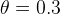

| テスト理論 |
| テスト理論 |
すでに項目パラメータが知られている項目からテストを構成する場合、能力パラメータの値は、特定の項目のセットに依存しない。 従って、回答者の能力レベルに応じて、適切な項目を組み合わせてテスト情報量を最大にするようなオーダーメイドのテストを作成することが可能である。 この場合、回答者に応じて提示される項目は異なる可能性があるが、それでも各々の回答者の回答パターンから推定された能力パラメータは相互に比較可能となる。
とはいえ、テストを開始する前は回答者の能力レベルについての情報がないので、あらかじめ適当に提示した項目への正誤から を見積もりつつ、それに応じた項目を順序提示し、を一定以上の精度で推定できるようになるまで繰り返すという手順を取ることが多い。 これには、すでに項目パラメータの値が知られている多くの項目を準備しておく必要がある。これを項目プールという。 項目プールから逐次的に項目を選択するのはコンピュータに頼ることが多く、回答者の能力に応じてコンピュータが項目を選択するテストのことをコンピュータ適応型テスト（computerized adaptive testing: CAT）という。 国際的に実施されている資格試験などでCATが採用されている。
を見積もりつつ、それに応じた項目を順序提示し、を一定以上の精度で推定できるようになるまで繰り返すという手順を取ることが多い。 これには、すでに項目パラメータの値が知られている多くの項目を準備しておく必要がある。これを項目プールという。 項目プールから逐次的に項目を選択するのはコンピュータに頼ることが多く、回答者の能力に応じてコンピュータが項目を選択するテストのことをコンピュータ適応型テスト（computerized adaptive testing: CAT）という。 国際的に実施されている資格試験などでCATが採用されている。
コンピュータ適応型テストの大まかなアルゴリズムは以下の通りである。
項目プールから項目をいくつか提示する
1.への正誤パターンから、を推定する
項目プールの中で、項目情報量が最大となる項目を提示する
3.への正誤から、を更新し、その推定精度を評価する。推定精度が一定以下であれば、3.へ戻る。推定精度が一定以上であれば、テストを終了する
回答者の能力値を最終的に更新されたとして報告する
最初に項目プールから提示される項目は、回答者のおおよその能力レベルを把握するためのもので、一般に困難度も識別力も中程度のものである。 その後は、その能力値のもとで最大の項目情報量を持つような項目、すなわち回答できるかどうかが五分五分で、識別力が最大の項目が提示される。 概して、ある項目に正答すれば、次はそれよりも困難度の高い項目が、誤答すれば、次はそれよりも困難度の低い項目が提示されることになる。
Figure 11 は、ある回答者の能力値が項目の提示によって更新されていく様子を示したものである。縦のバーは推定精度で、狭いほど推定精度が高く正確に能力値を推定できていることを表す。 最終的に12項目目でに収束し、テストが終了している。
の推定| テスト理論 |